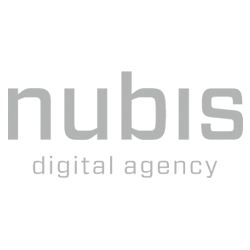
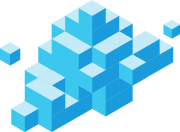
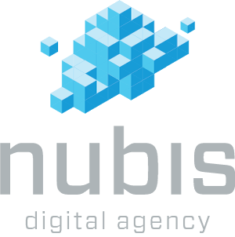

Nubis Resources
Wil je Nubis op je site noemen? Helemaal prima natuurlijk! We vragen je wel om onze officiële middelen te gebruiken, die je op deze pagina vindt. Zo kunnen we er zeker van zijn dat bijvoorbeeld de kwaliteit van ons logo overal goed is.
Logo
-

Logo
Ons logo, zonder de wolk. Deze gebruiken wij als profielfoto op diverse social media. Gebruik liever ons volledige logo als je ons op je website zit, de wolk is herkenbaarder.
-

-
Favicon
Gebruik dit icoon als een kleine identifier van Nubis. In de icoon zitten afbeeldingen van 16x16, 32x32 en 64x64 pixels.
{kind=link}
{kind=link}
-

{kind=link}
Teksten
Tagline
Digital Agency gericht op social media, creatie en development
Beschrijving
Bij Nubis hebben we verstand van social media, creatie en techniek. In de applicaties die we bouwen, komen deze drie expertises samen. Je kan ook bij ons aankloppen voor één ervan. Wat we bij Nubis ook voor je doen, we verwarren het middel nooit met het doel: niet onze diensten, maar de doelstellingen van onze klanten staan centraal.
Nubis (Latijn voor 'wolk') werd eind 2010 opgericht door Jelle Oskam en Gielke Burgmans. Sindsdien is Nubis uitgegroeid van een adviesbureau voor onlinemarketing tot 'digital agency' waar we werken op het snijvlak van marketing, design en techniek. Online laten die drie zich niet scheiden en dat doen wij dus ook niet.
In veel van onze opdrachten spelen social media een belangrijke rol. Het is de laatste jaren steeds waardevoller gebleken voortdurend en op grote schaal in contact te staan met consumenten, en social media maken dat mogelijk. Het vereist niet altijd enorme budgetten, maar wel intelligente campagnes, apps en constant beheer van de gebruikte platforms. Bij Nubis doen we dat allemaal.